one idea for all movement: nothing slides, things come into focus. the way a wash of paint settles.
fourteen moves, each one replacing something the site does today. switch between now and proposed at the top, then play each one. the three sliders change every proposed move at once.
01opening a painting
- now
- the page is covered by solid white, the painting grows out of its place.
- proposed
- white behind the painting, the page showing out of focus toward the edges. the painting grows, the words sharpen one after another. arrows: one painting dissolves into the next.
02pictures arriving
- now
- a flat tint, then the picture fades in.
- proposed
- the painting is there at once as soft color, and sharpens.
04the slideshow
- now
- one closeup fades over the other.
- proposed
- the same slow fade, only the new closeup settles into focus as it lands. the caption sharpens after it.


06leaving the slideshow
- now
- the closeup stays sharp until the header cuts it off.
- proposed
- as you scroll past, the closeup goes soft and pale, and the paintings below take over.
Kuba Chojnackihomecollectionsaboutcontact
selected works


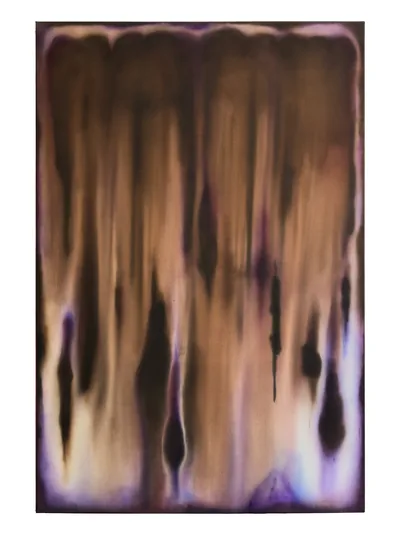
07changing page, quieter
- now
- a quick fade, the new page drifts in 12 px from the side.
- proposed
- no page effect. the words are there at once, only the pictures settle into focus, as in 02.
Kuba Chojnackihomecollectionsaboutcontact
atmospherechromaticworks on paperprints
Fields of thin acrylic on raw canvas. It moves from violets and blues through green into burgundies and earthy tones.
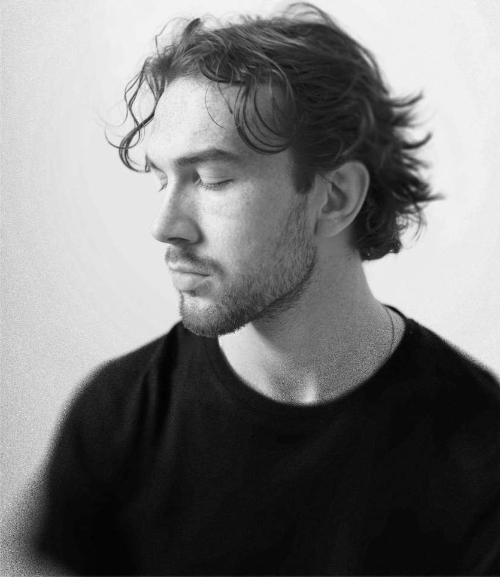
color caught in a shift transmission of one hue to another | gradient
I make abstract paintings: color absorbed directly into unprimed canvas. I am drawn to the moment before a color becomes a name, when it is still pure sensation. The pigment is poured and moved by gravity; what matters is what I leave alone.
09prints, changing painting
- now
- the sheet swaps in an instant.
- proposed
- the paper stays where it is. the picture on it turns slowly into the other, with no gap between them. a size change glides at the same pace.
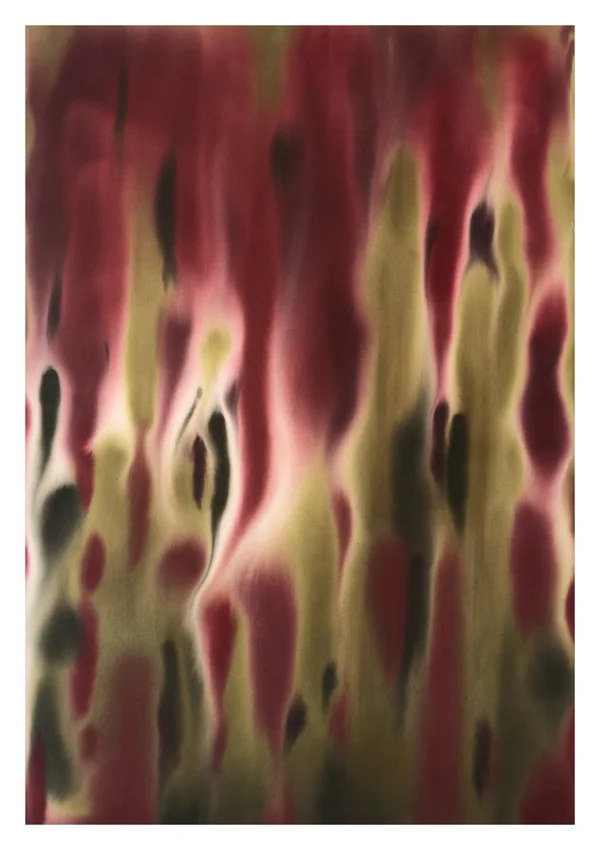
a print of
in450 €
59.4 × 84.1 cm, edition of 5
10paintings settle as they enter
- now
- every picture settles when its file has loaded, often before you have scrolled to it.
- proposed
- each row settles into focus when it comes on screen, once. this is 02, timed to your scrolling.
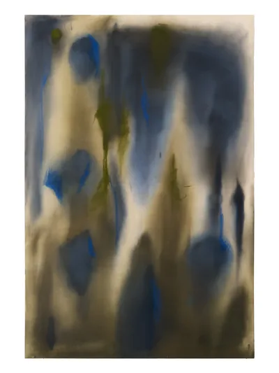

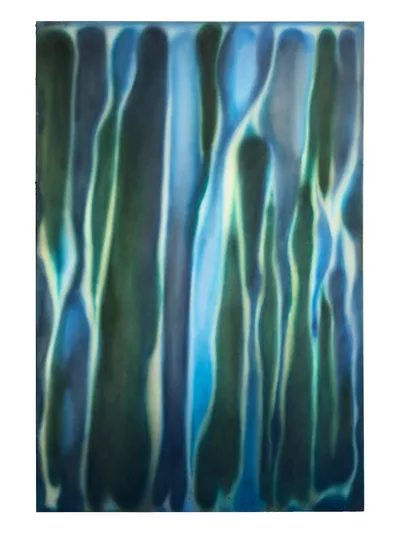
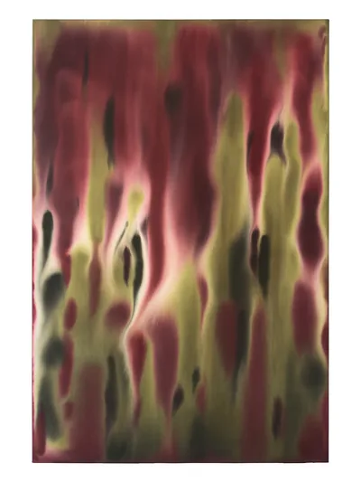
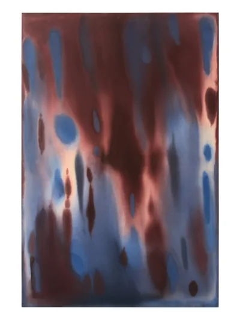
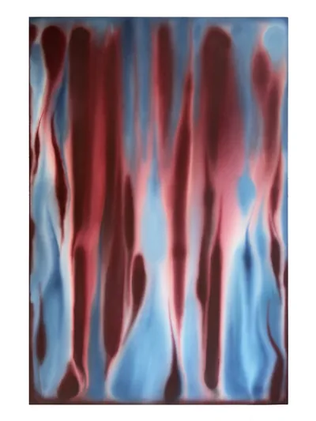
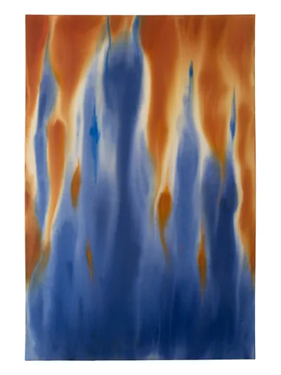
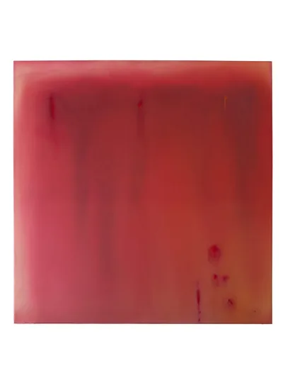
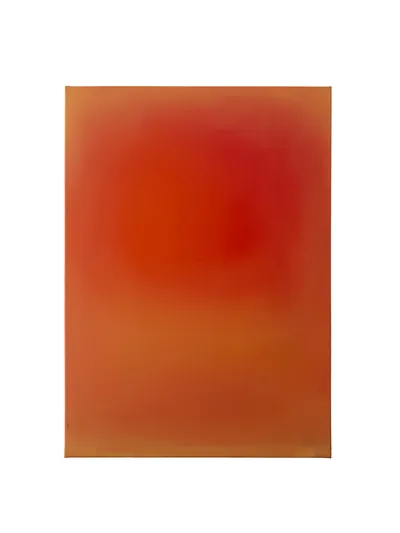
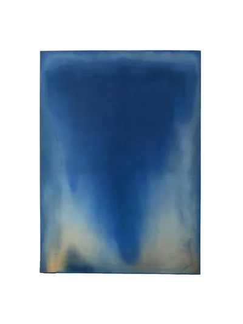
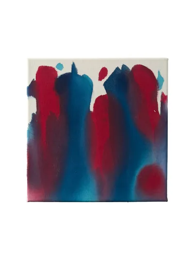

16zoom, the words step back
- now
- you zoom into the painting and the words stay sharp beside it.
- proposed
- while you look close, the words go soft and pale. they come back when you step back.
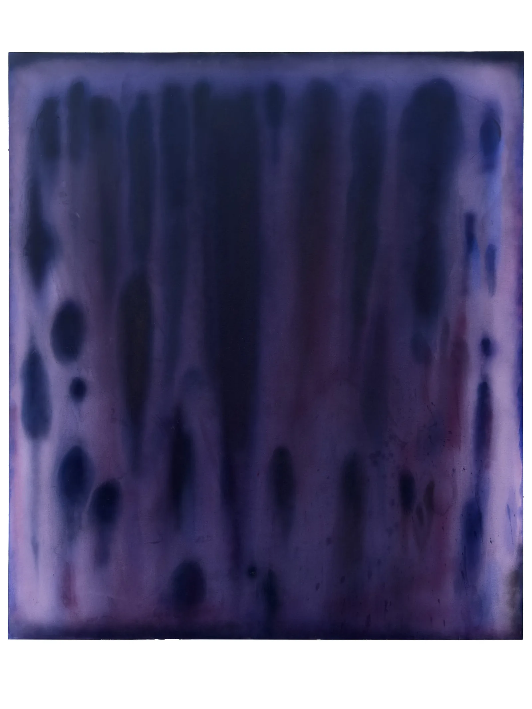
deep violet
atmosphere
1900 €
acrylic on raw canvas
150 × 130 cm, 2026
150 × 130 cm, 2026
inquire via email
inquire via instagram
inquire via instagram
17collection names trade places
- now
- a new page: the line of names is drawn again, with another name large.
- proposed
- the name you pick grows into the title, the old title shrinks back into the line, the others make room. the paintings below settle as in 02.
Kuba Chojnackihomecollectionsaboutcontact
18closeup opens into the painting
- now
- you click a closeup in the slideshow and the lightbox takes its place.
- proposed
- the closeup draws back to where the whole painting hangs and turns into it. the closeups are separate photographs, so it is a guided dissolve, not an exact zoom out.
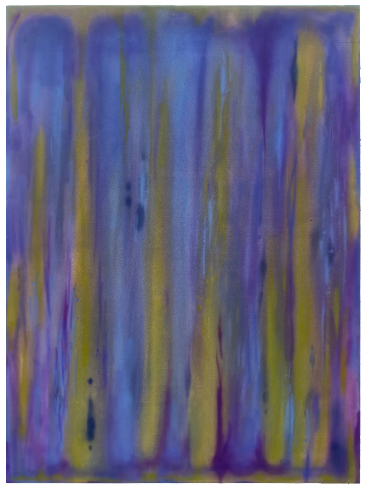
lavender green ochre
atmosphere
2800 €
acrylic on raw canvas
200 × 150 cm, 2026
200 × 150 cm, 2026
atmosphere | lavender green ochre19header steps aside
- now
- the header stays fixed over the wall all the way down.
- proposed
- scrolling down, the header slides out of the way and the wall has the whole window. the moment you scroll up, it is back. the one place something slides, because it follows your hand.
Kuba Chojnackihomecollectionsaboutcontact
20first arrival
- now
- the first closeup fades in, its caption rises.
- proposed
- once per visit: the name sharpens first, then the painting comes into focus, then its caption.
Kuba Chojnackihomecollectionsaboutcontact
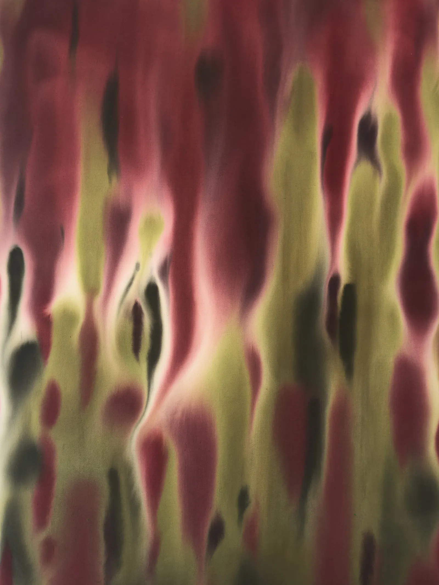
atmosphere | maroon khaki21neighbours at the edges
- now
- one painting, and arrows with a count to reach the others.
- proposed
- the paintings before and after wait at the edges, small and out of focus. click one and it comes forward. it would replace the arrow row.


atmosphere
22joining the list
- now
- the field is swapped for the thank you in an instant.
- proposed
- the field goes soft and the thank you sharpens in its place.
new paintings and prints, to subscribers first
thank you. now check your inbox to confirm the subscription.